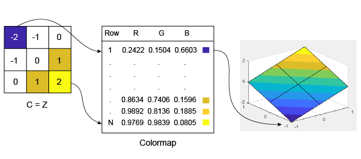

How Surface Plot Data Relates to a Colormap
When you create surface plots using functions such as surf or mesh, you can
customize the color scheme by calling the colormap function. If
you want further control over the appearance, you can change the direction
or pattern of the colors across the surface. This customization requires
changing values in an array that controls the relationship between the
surface and the colormap.
Relationship Between the Surface and the Colormap
The CData property of a Surface object
contains an indexing array C that associates
specific locations in your plot with colors in the colormap.
C has the following relationship to the
surface z =
f(x,y):
Cis the same size asZ, whereZis the array containing the values of f(x,y) at each grid point on the surface.The value at
C(i,j)controls the color at the grid location(i,j)on the surface.By default,
Cis equal toZ, which corresponds to colors varying with altitude.By default, the range of
Cmaps linearly to the number of rows in the colormap array.
For example, a 3-by-3 sampling of Z = X +
Y has the following relationship to a colormap
containing N entries.

Notice that the smallest value
(-2) maps to the first row in the
colormap. The largest value (2) maps to the last
row in the colormap. The intermediate values in C
map linearly to the intermediate rows in the colormap.
Note
The preceding surface plot shows how colors are
assigned to vertices on the surface. However, the
default behavior is to fill the patch faces with
solid color. That solid color is based on the colors
assigned to the surrounding vertices. For more
information, see the FaceColor property description.
Change the Direction or Pattern of Colors
When using the default value of C=Z, the colors vary with changes in Z.
[X,Y] = meshgrid(-10:10); Z = X + Y; s = surf(X,Y,Z); xlabel('X'); ylabel('Y'); zlabel('Z');

You can change this behavior by specifying C when you create the surface. For example, the colors on this surface vary with X.
C = X; s = surf(X,Y,Z,C); xlabel('X'); ylabel('Y'); zlabel('Z');

Alternatively, you can set the CData property directly. This command makes the colors vary with Y.
s.CData = Y;

The colors do not need to follow changes in a single dimension. In fact, CData can be any array that is the same size as Z. For example, the colors on this plane follow the shape of a sinc function.
R = sqrt(X.^2 + Y.^2) + eps; s.CData = sin(R)./(R);